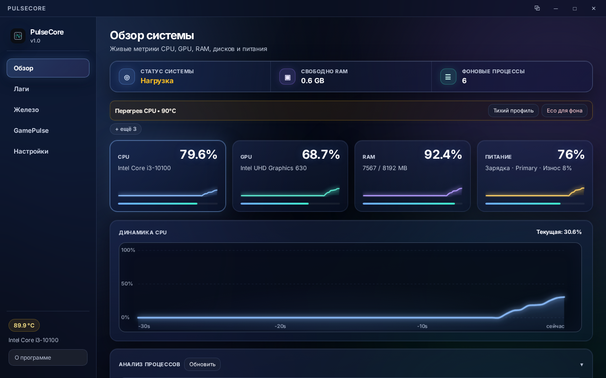
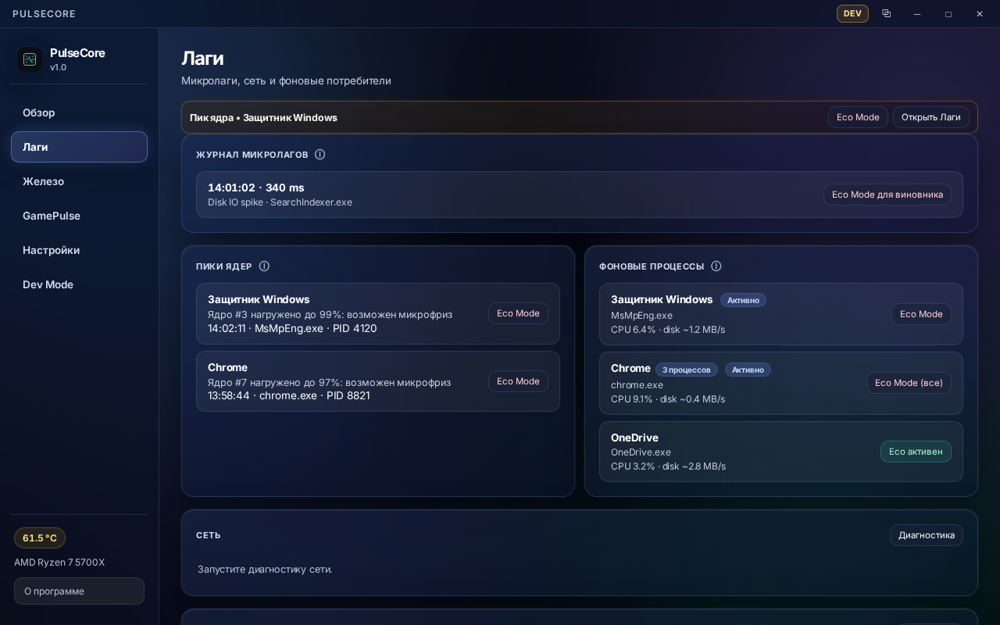
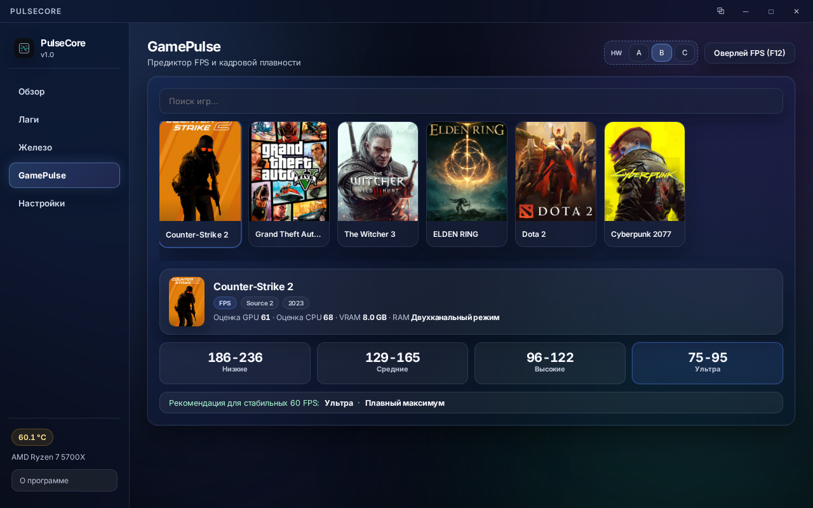
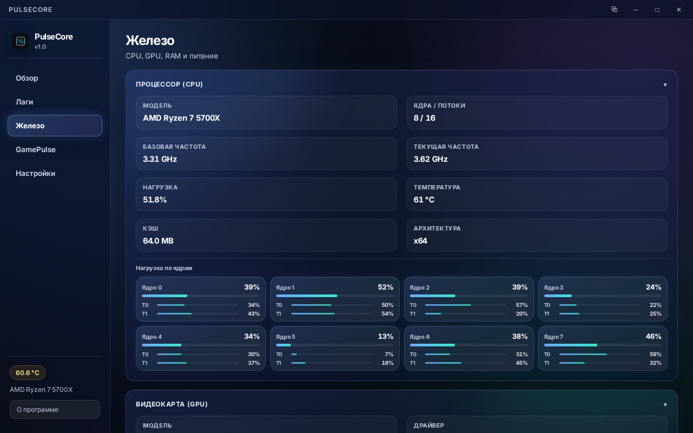

Микролаги + Eco Mode
Ловит пики ядер и паузы ≥300 мс, показывает виновника. Eco Mode мягко усмиряет фон без закрытия процессов, с безопасным denylist и откатом.

Лёгкий системный монитор, детектор микролагов и предиктор FPS для Windows
Тот же aurora-glass UI, что в приложении. Переключайте вкладки




Стек Go + Wails: точность датчиков и спокойный UI
Ловит пики ядер и паузы ≥300 мс, показывает виновника. Eco Mode мягко усмиряет фон без закрытия процессов, с безопасным denylist и откатом.
GamePulse оценивает Low/Med/High/Ultra по CPU, GPU и каналам RAM.
Компактный оверлей поверх окон: CPU, GPU, RAM и температуры.
asInvoker-манифест. Вкладки работают без elevation; админ-действия с понятным отказом.
Нет скрытого HTTP. Сеть только по кнопке; Steam CDN только при поиске игр.
Лёгкий desk-app без Electron-жира. Опрос датчиков настраивается: 0.5 / 1 / 2 с.
Три шага до первого запуска на Windows 10/11
Откройте Releases и возьмите PulseCore-*-windows-amd64.zip.
Проверьте SHA256 при желании и извлеките PulseCore.exe.
Нужен WebView2 (уже есть на современных Windows). Готово.